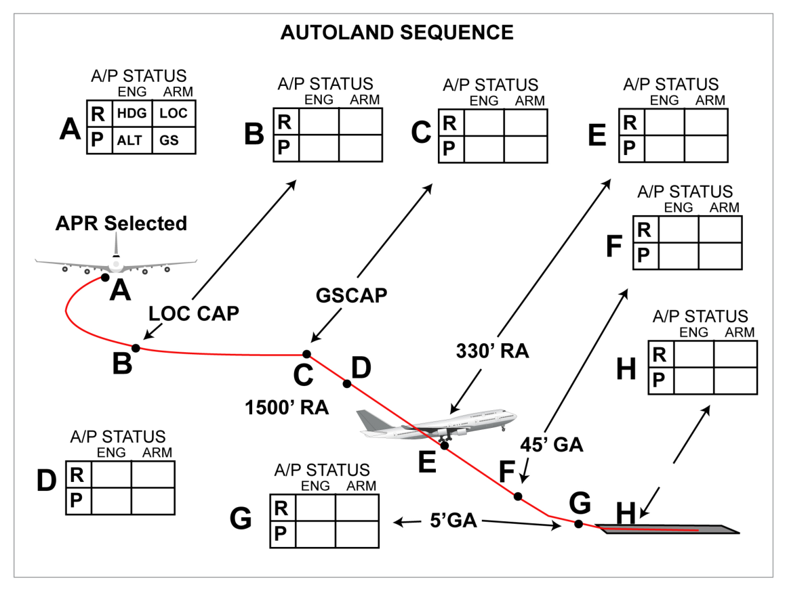

What this section covers: Why landing is the most demanding manoeuvre, and what an automatic landing system must achieve.
The approach and landing is the most difficult manoeuvre demanded of a pilot because it requires simultaneous control of the aircraft in all three axes AND airspeed. The pilot must:
Align the aircraft with the runway centreline
Achieve a sink rate of about 2 ft/sec before touchdown
Reduce airspeed from 1.3 VS to about 1.15 VS by progressive reduction of engine power
Level wings before landing
Yaw aircraft to remove drift angle (drift "kick-off" or de-crabbing)
An automatic landing system must provide guidance and control better than that required of the pilot.
2. Autoland System Requirements
What this section covers: What an autoland system must be able to do, and the minimum equipment required.
Objectives of Autoland System Operation
Not disturb the flight path as a result of an active malfunction
Have adequate authority for sufficiently accurate flight path control
Warn of a passive failure
Allow the intended flight manoeuvre to be completed following an active or passive failure
Minimum Equipment Required
A minimum of two independent autopilots capable of following ILS signals
Two independent radio altimeters for accurate height-from-ground information
Category 3 ILS ground installation at the airport
3. Autoland Status — Fail-Passive vs Fail-Operational
What this section covers: The two categories of autoland capability and the A/P numbers required for each.
Status
Definition
Minimum A/Ps
ICAO Term
Fail-Passive (Fail-Soft)
Withstands failure without endangering safety, without excessive path deviation, but removes automatic landing capability
2
LAND 2
Fail-Operational (Fail-Active)
Withstands failure without affecting overall system function; automatic landing capability maintained
3 (or 2 with suitable duplicate monitoring)
LAND 3
Memory Aid: Fail-Passive = 2 A/Ps = LAND 2 = failure stops autoland but no danger
Fail-Operational = 3 A/Ps = LAND 3 = failure still leaves autoland working
Status Annunciator: LAND 2 = dual redundancy (fail-passive). LAND 3 = triple redundancy (fail-operational). Each status displayed on the autoland status annunciator.
4. The Automatic Landing Sequence
What this section covers: The overall profile and the approach, flare, and touchdown sequence.
During cruise and initial approach, the control system operates as a single channel system. At a certain stage of approach, the remaining channels are armed by pressing the APPR switch on the flight control panel — this also arms LOC and GS modes.
Radio Altimeter Role
Altitude information for vertical guidance to touchdown is always provided by radio altimeter, which becomes effective as soon as altitude is within its operating range (typically 2500 feet).
Radio Altimeter Inoperative: Failure of a single radio altimeter causes the autoland system to fail passive. Do not use the associated FCC or the A/T (if affected) for approach and landing.

Fig 27.1 — Autoland Sequence (source p.386)
Approach Mode (APP) — Dual A/P
The APP mode arms the AFDS to capture and track LOC and GS. One VHF Nav receiver must be tuned to an ILS frequency before APP can be selected. For dual A/P approach, the second VHF Nav receiver must also be tuned and the corresponding A/P engaged prior to 800 ft RA.
LOC Capture: Point is variable; depends on intercept angle and rate of closure. Does not occur at less than ½ dot deviation. Upon capture: VOR LOC annunciates captured, 1 CH annunciated for A/P status.
GS Capture: Can be from above or below (below preferred). Capture at 2/5 dot deviation. After both LOC and GS captured, APP mode can only be exited by TOGA switch or disengaging A/P + turning off both FD switches.
5. Height-by-Height Autoland Detail
What this section covers: The precise sequence of autopilot actions from 1500 ft RA down to touchdown.
flowchart TD
A["LOC + GS captured\nbelow 1500 ft RA"] --> B["1500 ft RA\n2nd A/P couples\nFLARE mode armed\nGA mode armed\nROLL OUT armed (if avail)\nLAND 2 or LAND 3 annunciated"]
B --> C["800 ft RA\n2nd A/P must be engaged\nby this point\n(inhibited if not)"]
C --> D["400–330 ft RA\nStabilizer trimmed nose-up\nElevators neutralize\nIf A/Ps disengage → fwd column force needed"]
D --> E["~50 ft RA (45 ft GA)\nFLARE mode engaged\nFD command bars retract\nStabilizer again nose-up\nA/T begins retarding thrust"]
E --> F["~5 ft GA\nFLARE disengages → touchdown\nLOC disengages\nROLL OUT engages"]
F --> G["~1 ft GA\nPitch attitude decreased to 2°"]
G --> H["Touchdown\nElevators lower nose\nNose gear contacts runway\nA/T auto-disengages ~2 sec after TD\nAFCS remains on until manually disengaged"]
Key Height Values
Height
Event
2500 ft
Radio altimeter typically becomes effective
1500 ft RA
2nd A/P couples; FLARE armed; GA armed; ROLL OUT armed; LAND 2/3 annunciated
800 ft RA
2nd A/P must be engaged by this point; 2nd A/P engagement inhibited below this
~350 ft RA
If FLARE not armed, both A/Ps automatically disengage
FLARE mode engages; FD bars retract; A/T begins retarding thrust at ~27 ft RA
27 ft RA
A/T begins retarding thrust toward idle
~5 ft GA
FLARE disengages; transition to touchdown; LOC disengages; ROLL OUT engages
~1 ft GA
Pitch attitude reduced to 2°
Touchdown
Elevators lower nose; nose gear on runway; A/T disengages ~2 sec after TD
Critical Note on Flare:
The FLARE mode reduces vertical speed from approximately 10–12 ft/sec at 50 ft to 1–2 ft/sec at touchdown. It uses the rate of reduction of radio height as its controlling signal.
Exam Tip — Gear Altitude vs Radio Altitude: Gear Altitude (GA) is a calculated value based on radio altitude, pitch attitude, and known geometry between landing gear, fuselage, and RA antenna. It differs from RA (radio altitude) by the amount the gear hangs below the aircraft datum.
6. Other Autoland Features
What this section covers: Runway alignment (de-crabbing), roll-out, and the A/T behaviour after landing.
Runway Alignment (De-crabbing)
Any autoland-capable system must remove drift prior to touchdown. This is the runway alignment mode:
Typically armed at the same time as flare mode (at 1500 ft descent)
Engages at less than 100 ft
From 1500 ft the yaw channel computes the difference between heading and track
When align mode engages, rudder deflects to align the aircraft with the runway centreline before touchdown
This manoeuvre is called de-crabbing or drift kick-off
Roll-out
A Cat 3 autoland function. Gives steering commands on the ground proportional to localizer deviation to keep the aircraft on the runway centreline throughout the ground roll.
Commands displayed via a rotating 'barber's pole' indicator called a Para-Visual Display (PVD), or
Automatic steering by applying deviation signals to the rudder channel and nosewheel steering
A/T After Landing
When reverse thrust is applied, the autothrottle system is automatically disengaged
Irrespective of reverse thrust, the A/T automatically disengages approximately 2 seconds after touchdown
The automatic flight control system remains on until manually disengaged by the flight crew — this is when the autoland sequence is considered complete
7. A/P Go-around Mode
What this section covers: The A/P go-around mode during autoland operations.
The A/P GA mode requires dual A/P operation. It becomes armed when FLARE ARMED is annunciated. Cannot be engaged before flare arm is annunciated or after the A/P senses touchdown.
Warning: If GA mode is selected after touchdown and prior to A/T disengagement, the A/Ps will disengage and the A/Ts may command GA thrust — the procedure must be flown manually.
A/P GA Sequence
Either TOGA switch pressed → GA mode engaged → GA annunciated for AFDS
When programmed rate of climb established, A/P controls pitch to hold normal flap manoeuvring speed
Roll: A/Ps maintain the aeroplane ground track existing at GA engagement
Leaving A/P GA Mode
Below 400 ft RA: A/Ps must be disengaged to change pitch or roll modes from GA
Above 400 ft RA: other modes can be selected
If roll mode changed first: selected mode engages in single A/P roll; pitch remains in dual GA
If pitch mode changed first: pitch engages in single A/P; 2nd A/P disengages; roll changes to CWS R
ALT ACQ engages when approaching selected altitude; ALT HOLD engages at selected altitude if stabilizer trim is satisfactory for single A/P
Exam Tip: GA transition to ALT ACQ is normally successful if the selected altitude is at least 1000 ft above GA engagement altitude. Higher may be needed if full GA thrust was used.
8. ILS — The Ground Guidance System
What this section covers: ILS components — both ground-based and airborne.
Marker beacons — distance to runway threshold (now largely replaced by DME)
Airborne Elements
Localizer receiving antenna (usually same as VOR antenna)
Glide slope receiving antenna
Dual ILS receiver installation
LOC and GS deviation indicator
Marker beacon antenna and receiver (or DME)
Marker lights on main instrument panel
9. Weather Minima — Decision Height & RVR
What this section covers: RVR and Decision Height definitions and how they define "weather minima."
RVR (Runway Visual Range): An instrumentally derived value representing the range at which high-intensity lights can be seen along the runway. Measured by instruments; transmitted to ATC who inform pilots of current conditions.
Decision Height (DH): The wheel height above the runway elevation at which a go-around must be initiated by the pilot, unless adequate visual reference has been established and the aircraft position/approach path have been visually assessed as satisfactory to safely continue the approach or landing.
Weather minima = minimum values of DH and RVR, specified by national licensing authorities for various aircraft and airport types.
Slant Visual Range: During approach, the pilot's line of sight is down the glide path (not along the runway), causing "slant visual range" — the pilot must account for this to avoid misinterpreting visual cues, especially in low visibility.
10. ICAO Categorization of Landing Capabilities
What this section covers: The three main categories of low-visibility landing and their specific DH and RVR limits.
Important Clarification: "All weather operations" does NOT mean no weather can prevent landing. No system can land in wind conditions exceeding certification limits, or on a runway contaminated by water, slush or ice.
Exam Tip — Quick Reference:
CAT 1 = 200 ft / 550 m RVR | CAT 2 = 100–200 ft / 300 m RVR | CAT 3A = <100 ft / 200 m RVR | CAT 3B = <50 ft / 75–200 m RVR | CAT 3C = zero/zero
11. Alert Height
What this section covers: Alert Height — the decision point for continuing autoland after a failure.
The Alert Height is a specified radio height, based on the aircraft's characteristics and its fail-operational landing system. It is the height above which any failure in a required redundant system leads to a go-around (unless reversion to a higher DH is possible).
Failure Point
Action
Above Alert Height
Discontinue approach and execute go-around (unless reverting to higher DH is possible)
Below Alert Height
Failure is ignored and approach continued to complete the autoland
Exam Tip: Alert Height applies only to fail-operational systems. Below the Alert Height, a failure is tolerated because the remaining system still has sufficient capability to complete the landing safely.
Quick Revision Summary — Chapter 27:
Landing = most demanding manoeuvre: 3-axis control + airspeed management simultaneously
Autoland requires: ≥2 independent A/Ps + 2 radio altimeters + Cat 3 ILS on ground
Fail-Passive (LAND 2) = 2 A/Ps = failure stops autoland but no danger
Key heights: 1500 ft (2nd A/P, FLARE armed, LAND 2/3), 800 ft (2nd A/P must be engaged), 350 ft (FLARE not armed → A/Ps disengage), 50 ft (FLARE engages), 27 ft (A/T retards), 5 ft (FLARE off, ROLLOUT on), 1 ft (pitch to 2°)
FLARE reduces sink from 10–12 ft/sec to 1–2 ft/sec; uses RA rate of change
A/T disengages ~2 seconds after touchdown automatically
De-crabbing = runway alignment mode; engages below 100 ft
CAT 1 = 200 ft/550 m; CAT 2 = 100–200 ft/300 m; CAT 3A <100 ft/200 m; CAT 3B <50 ft/75–200 m; CAT 3C = no limits
Practice Questions & Detailed Answers
Instructor-generated questions in DGCA CPL/ATPL examination style.
Q1.What is the minimum number of autopilots required for a fail-passive (LAND 2) autoland?
One
Two
Three
Four
Correct Answer: (b) Two
Explanation: Fail-passive (LAND 2) status requires a minimum of two independent autopilots. This allows the system to withstand a failure without endangering safety — but it removes the ability to complete an automatic landing. See Section 3.
Why other options are wrong:
(a) One A/P provides single-channel only — no redundancy for fail-passive operation.
(c) Three A/Ps are required for fail-operational (LAND 3).
(d) Four is not a standard requirement number for autoland.
Instructor's Note: LAND 2 = 2 A/Ps = fail-passive; LAND 3 = 3 A/Ps = fail-operational. Commit this pairing to memory.
Q2.During an autoland sequence, at what approximate height does the FLARE mode engage?
200 ft RA
100 ft RA
50 ft RA (45 ft gear altitude)
10 ft RA
Correct Answer: (c) ~50 ft RA (45 ft gear altitude)
Explanation: The A/P flare manoeuvre starts at approximately 50 ft RA (computed as 45 ft gear altitude). FLARE mode is engaged, FD command bars retract, and stabilizer is trimmed further nose-up. The A/T begins retarding thrust at approximately 27 ft RA to reach idle at touchdown. See Section 5.
Why other options are wrong:
(a), (b) These heights trigger other events (1500 ft = 2nd A/P couples; FLARE arms at 1500 ft, engages much later).
(d) 10 ft is too low — flare begins at ~50 ft RA to have time to reduce sink rate properly.
Instructor's Note: The distinction between FLARE ARMED (1500 ft) and FLARE ENGAGED (~50 ft) is a common exam trap.
Q3.What is the ICAO Category 2 ILS approach decision height range?
Not lower than 200 ft
Lower than 200 ft but not lower than 100 ft
Lower than 100 ft
No decision height (to the surface)
Correct Answer: (b) Lower than 200 ft but not lower than 100 ft
Explanation: Category 2 is defined as a precision instrument approach and landing with a decision height lower than 200 ft but not lower than 100 ft, and a RVR not less than 300 m. See Section 10.
Q4.What is "de-crabbing" in the context of autoland?
The automatic retraction of flaps after landing
Applying rudder to align the aircraft with the runway centreline by removing drift before touchdown
The automatic go-around manoeuvre initiated below 100 ft
The nose-down pitch manoeuvre to lower the nose gear
Correct Answer: (b)
Explanation: De-crabbing (also called drift kick-off) is the runway alignment mode. The yaw channel computes the difference between heading and track from 1500 ft. Below approximately 100 ft, align mode engages and the rudder deflects to align the aircraft with the runway centreline, removing any crab/drift angle before touchdown. See Section 6.
Why other options are wrong:
(a) Flap retraction is a pilot action after landing, not an autoland mode.
(c) Autoland GA mode is separate from runway alignment.
(d) Nose-down pitch to lower the nose gear is a distinct touchdown event.
Instructor's Note: "De-crabbing" and "drift kick-off" are the same manoeuvre — removing the crosswind crab angle before wheels touch down.
Q5.What is the Alert Height in the context of autoland?
The height at which the Captain must visually assess the approach for continuation
A specified radio height above which a failure in a redundant system causes a go-around; below which the failure is ignored
The height at which the FLARE mode is armed
The minimum visibility height for Category 3A operations
Correct Answer: (b)
Explanation: The Alert Height is a specified radio height. Above the Alert Height, a failure in a required redundant operational system causes the approach to be discontinued. Below the Alert Height, such a failure is ignored and the approach continues to complete the autoland — because the remaining system is sufficient to complete it safely. See Section 11.
Why other options are wrong:
(a) This describes Decision Height, not Alert Height.
(c) FLARE is armed at 1500 ft — that is not the Alert Height.
(d) Alert Height is not directly linked to visibility minima.
Instructor's Note: Alert Height is a fail-operational concept — it's the boundary below which you commit to completing the autoland even with one system failed.
Q6.At what approximate radio altitude does the autothrottle begin retarding thrust during an autoland flare?
50 ft RA
27 ft RA
10 ft RA
5 ft RA
Correct Answer: (b) 27 ft RA
Explanation: The A/T begins retarding thrust at approximately 27 ft RA to reach idle at touchdown. The FLARE mode itself engages at approximately 50 ft RA / 45 ft gear altitude. See Section 5.
Why other options are wrong:
(a) 50 ft RA is when FLARE mode engages, not when A/T retards thrust.
(c) 10 ft RA is too low — A/T must retard early enough for thrust to reach idle at touchdown.
(d) 5 ft is when FLARE disengages and transition to touchdown begins.
Instructor's Note: FLARE at 50 ft, A/T RETARD at 27 ft, FLARE off at 5 ft, pitch to 2° at 1 ft. These heights are precise and frequently examined.